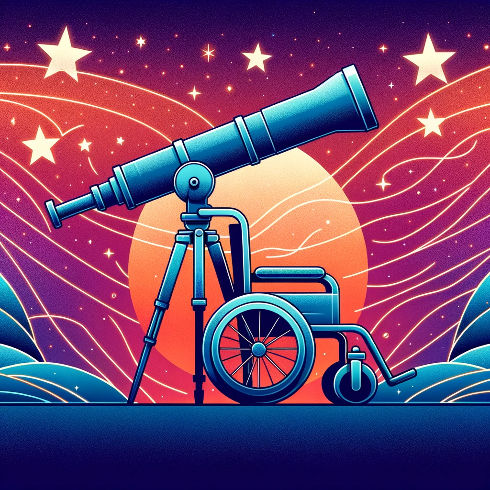
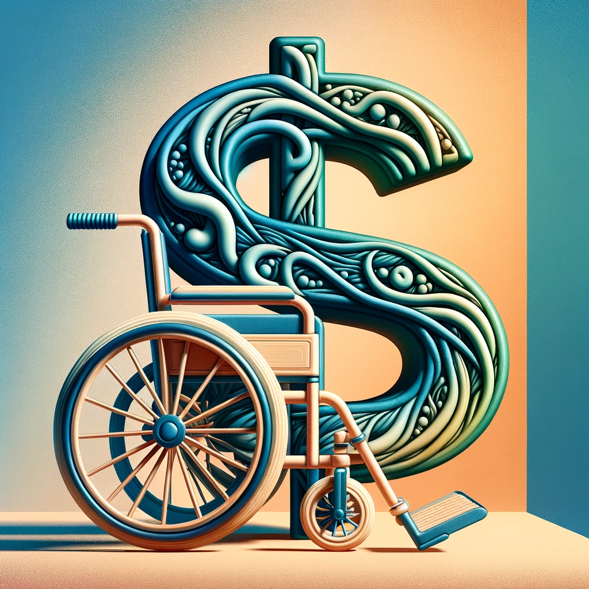

Le coût du matériel adapté
Paradoxalement, l’équipement qui est utilisé par les personnes en situation de handicap afin d’avoir accès à diverses activités est peu accessible pour plusieurs, en raison du prix prohibitif. Par équipement adapté, on entend les interrupteurs adaptatifs (switchs), appareils de communication et activités adaptées (par exemple, jouets du commerce avec ajout d’une fiche 3.5mm). Il n’est donc pas de notre prétention d’inclure les équipements tels que les fauteuils roulants, les bases roulantes ou l’équipement pour adapter un domicile dans cette réflexion, bien que certaines de leurs caractéristiques doivent correspondre aux points de discussions présentés ci-dessous.
Une exploration sur des sites populaires tels que enablingdevices, bridges, rehabmart, ou ablenet révèle des prix parfois exorbitants. Cet article propose d’explorer les facteurs économiques, politiques et technologiques qui contribuent à cette problématique, ainsi que des pistes de solutions potentielles.
Recherche et développement
Développer du matériel adapté nécessite une période significative de préparation, impliquant des professionnels de divers branches de métiers, comme des ingénieurs et des spécialistes des technologies adaptées. Cette phase de préparation est cruciale pour garantir que les produits finaux répondent aux besoins fonctionnels des utilisateurs. Les prototypes doivent être testés en laboratoire à de maintes reprises avant d’être prêts à être distribués au niveau commercial, puisque les entreprises offrant ce type de produits ont un service après-vente très limité. Ce processus est centralisé et se déroule en silo, chaque compagnie devant développer ses technologies de manière indépendante afin de protéger leurs parts de marché.
Personnalisation
Certains appareils doivent être adaptés aux besoins particuliers d’un ou plusieurs utilisateurs. Par exemple, un système de montage doit être placé exactement au bon endroit, avoir une façon d’être placée sur l’équipement actuel de l’utilisateur et aussi être adéquat pour sa force et l’utilisation qu’il désire en faire. Ces systèmes sont donc créés pour pouvoir être ajustables plutôt que directement conçues selon les spécification exacte de l’utilisateur. La grande diversité des besoins est ainsi un élément qui entraîne des coûts importants, étant donné que les appareils doivent pouvoir s’ajuster au plus grand nombre d’utilisateurs pour être rentable. Cela entraîne des coûts supplémentaires significatifs.
Production à bas volume
Comparativement à d’autres produits de consommation, le matériel adapté est produit en quantité relativement limitée. Plus l’équipement vise à pallier une situation de handicap complexe et rare, plus cette affirmation s’avère vraie. Par exemple, une canne va être produite en quantité beaucoup plus importante qu’un interrupteur à aspiration et souffle qui est destiné à un public plus restreint. En conséquence, l’équipement qui est acheté par les fabricants doit être rentabilisé sur une plus petite quantité de produit. Par exemple, pour une pièce de plastique produite par injection, un moule doit être conçu. Plus celui-ci est utilisé, plus le coût de chaque produit diminue. Le même principe s’applique au niveau logiciel; la progammation entraîne des coûts qui doivent être récupérés sur une petite quantité de produits.
Accumulation de capital et marchandisation
Dans une perspective plus large, la question fondamentale à savoir pourquoi les biens et services destinés aux personnes les plus vulnérables de notre société font l’objet d’une marchandisation s’impose. De façon automatique, sans y porter attention ou prendre le temps d’y réfléchir, l’ordre social et nos habitudes nous imposent d’accepter cet état de fait sans le questionner. Ainsi, que des outils qui peuvent être essentiels pour permettre à une personne de trouver sa voix ou d’avoir accès à des loisirs puissent faire l’objet d’une étiquette de prix énorme n’est pas questionné. L’urgence et la centralité du besoin que ces appareils peuvent combler donne aux mécanismes et aux individus qui viennent fixer les prix une marge de manoeuvre afin de pouvoir maximiser leur profit, selon la logique aveugle de l’offre et la demande. 
Taxe sur le handicap
Les personnes en situation de handicap ainsi que leurs proches connaissent les coûts financiers qui viennent s’ajouter à la complexité de leur situation. Par exemple, adapter le domicile, même avec l’aide de subventions gouvernementales, peut s’avérer onéreux. Un autre exemple pourrait être au niveau du manque de soutien de la société en général par rapport aux besoins des personnes ayant des habiletés diverses dans les espaces publics. Les personnes les plus vulnérables de notre société sont constamment sollicitées au niveau financier afin de combler des besoins et maintenir leur dignité. Ce même concept s’applique au niveau du prix des équipements adaptés. Alors qu’un clavier et une souris d’ordinateur typiques peuvent être achetés pour 30 ou 40 dollars, l’équivalent pour une personne qui a besoin de matériel adapté peut facilement être 10 fois plus cher, alors qu’une quantité semblable de matériaux est utilisée.
Implication des organismes publics
Puisque les produits de technologies adaptées sont typiquement achetés par des agences gouvernementales, il peut y avoir une déconnection au niveau de l’incitatif économique. Les professionnels procédant aux achats peuvent être portés à payer plus cher puisqu’ils ne dépensent pas leur propre argent. Aussi, ils peuvent être craintifs face à l’innovation et au risque d’essayer de nouveaux produits. Les compagnies qui produisent et distribuent ces biens sont bien au fait de cela et peuvent moduler leur prix en conséquence. Cette influence sur le marché peut avoir un impact sur l’accessibilité des technologies pour les utilisateurs qui, pour une raison ou une autre, ne sont pas admissibles à l’aide gouvernementale.
Des pistes de solutions
Changer les modes de production
 Dans une manufacture traditionnelle, comme celle utilisant le moulage par injection, il est impératif que chaque objet produit soit identique. Les moules, coûteux, doivent être amortis par la production en masse. Cependant, l'avènement de technologies telles que l'imprimante 3d a permis de changer la façon dont certains biens sont produits. Il est parfois nécessaire de créer des objets adaptés à des besoins particuliers, par exemple avec une certaine taille, ou d'autres paramètres qui sont modifiés dépendamment de l'utilisateur. L'imprimante, en raison de son fonctionnement, peut créer des objets tous très différents les uns des autres sans problèmes ou coûts additionnels. Depuis fin 2022, avec l'apparition d'imprimantes 3D de haute qualité dont l'utilisation ne nécessite pas de connaissances techniques (e.g. Bambulab), il est maintenant possible pour toute personne de produire des biens. Des particuliers peuvent s'en procurer; mais il est aussi possible d'y avoir accès auprès de certains organismes et bibliothèques publiques. Ce type de production permet de créer du matériel adapté de manière rapide et personnalisée; il constitue la principale solution au problème abordé dans cet article.
Dans une manufacture traditionnelle, comme celle utilisant le moulage par injection, il est impératif que chaque objet produit soit identique. Les moules, coûteux, doivent être amortis par la production en masse. Cependant, l'avènement de technologies telles que l'imprimante 3d a permis de changer la façon dont certains biens sont produits. Il est parfois nécessaire de créer des objets adaptés à des besoins particuliers, par exemple avec une certaine taille, ou d'autres paramètres qui sont modifiés dépendamment de l'utilisateur. L'imprimante, en raison de son fonctionnement, peut créer des objets tous très différents les uns des autres sans problèmes ou coûts additionnels. Depuis fin 2022, avec l'apparition d'imprimantes 3D de haute qualité dont l'utilisation ne nécessite pas de connaissances techniques (e.g. Bambulab), il est maintenant possible pour toute personne de produire des biens. Des particuliers peuvent s'en procurer; mais il est aussi possible d'y avoir accès auprès de certains organismes et bibliothèques publiques. Ce type de production permet de créer du matériel adapté de manière rapide et personnalisée; il constitue la principale solution au problème abordé dans cet article.
Diffusion libre de la connaissance
Internet a révolutionné la manière dont les gens ont accès à l’information. Pour les personnes en situation de handicap, cela leur a permis de s’organiser, d’avoir des contacts avec des personnes semblables et évidemment, d’avoir accès à divers guides et tutoriels permettant d’améliorer leur quotidien. Cette dissémination du savoir est le complément parfait à l’imprimante 3d. Cela permet des initiatives locales; toute association, école, organisme peut maintenant avoir accès à la fois aux moyens de productions et aux connaissances qui permettent de les utiliser. Par exemple, on peut trouver une multitude de fichiers d’imprimante 3d de matériel adapté sur internet (voir section ressources). Des cours, accessibles gratuitement, permettent aussi d’apprendre comment faire du dessin 3d ou comment utiliser divers objets du quotidien pour améliorer la vie des personnes en situation de handicap.
Les personnes qui disposent de ces sources d’informations ont la possibilité de réaliser leurs propres expériences, d’intégrer leurs découvertes et expertises, favorisant de ce fait l’élargissement de cette base de connaissances ouverte et disponible pour tous. C’est donc un système qui se renforce et s’améliore lorsque les personnes y participent. Il est ainsi d’autant plus important d’impliquer le plus de personnes d’horizons différents dans les communautés de création et d’utilisation de matériel.

Rejet du système de brevet à l’américaine
Le système de brevet à l'américaine, qui est prévalent dans le domaine des technologies, est un obstacle majeur à l'innovation et à la libre distribution des innovations de pointe. La propension à utiliser la litigation pour résoudre les conflits, la grande variété d'inventions qui sont brevetables et les frais légaux qui les accompagnent pousent à la hausse le prix des technologies adaptés. Éthiquement, les technologies qui permettent aux personnes de répondre à leurs besoins de base (e.g. communiquer, avoir un accès aux technologies) devraient être libres de restrictions. Des modèles, comme le open source et les licenses creative commons sont des solutions idéales en ce qui a trait aux technologies assisitives. Ils permettent aux acteurs concernés de s'impliquer dans l'innovation de façon active et sont porteurs d'empowerement pour les utilisateurs.Proximité et collaboration entre les utilisateurs et les créateurs
La proximité entre le créateur et l’utilisateur permet un échange et un retour sur les produits. Le coût et le temps nécessaire pour le développement peut donc être réduit; au lieu que l’équipement soit testé en laboratoire, il peut être directement testé par l’utilisateur, lorsque cela peut être fait de manière sécuritaire. De façon très pragmatique, réduire la distance entre ceux-ci permet de réduire les coûts financiers et environnementaux associés à la livraison de produits qui proviennent généralement des États-Unis ou de la Chine. Par ailleurs, l’utilisateur peut aussi directement s’exprimer sur ses besoins, ce qui est créé peut donc être modulé en fonction de ses attentes spécifiques. Un autre effet de cette proximité est au niveau motivationnel; une compagnie qui manufacture ses produits sans contact avec la clientèle est davantage à risque d’être emporté par des considérations purement pécuniaires. Le créateur qui développe un lien avec l’utilisateur peut voir l’impact de son travail et en retirer une satisfaction autre que financière. En dernier lieu, et d’une façon encore plus centrale, la personne ayant des besoins particuliers et son entourage sont les experts de sa condition et sont les mieux placés pour trouver des solutions ingénieuses, lorsqu’ils ont le soutien et la collaboration d’une communauté ayant les outils et les habiletés techniques nécessaires. Inclure les partis prenantes de manière plus importante dans le développement de matériel représente donc un avantage considérable pour tous.
Conclusion
Il y a donc de l’espoir à moyen et long terme pour que le prix du matériel adapté subisse une correction à la baisse. Avec la pression économique qu’amène les communautés qui oeuvrent selon les principes de mentionnés précedemment, les entreprises privés qui oeuvrent pour le profit n’auront pas le choix de modifier leur façon de procéder. L’innovation dans le domaine de l’imprimante 3d et des technologies qui y sont associées va entraîner une poursuite inéluctable de cette évolution au niveau de la démocratisation des moyens de production. C’est dans cette optique que la mission d’Adaptatech s’inscrit; en diffusant l’information de manière libre, l’espoir est que plus de personnes ayant des besoins différents puissent avoir accès à des activités signifiantes dans leur quotidien.